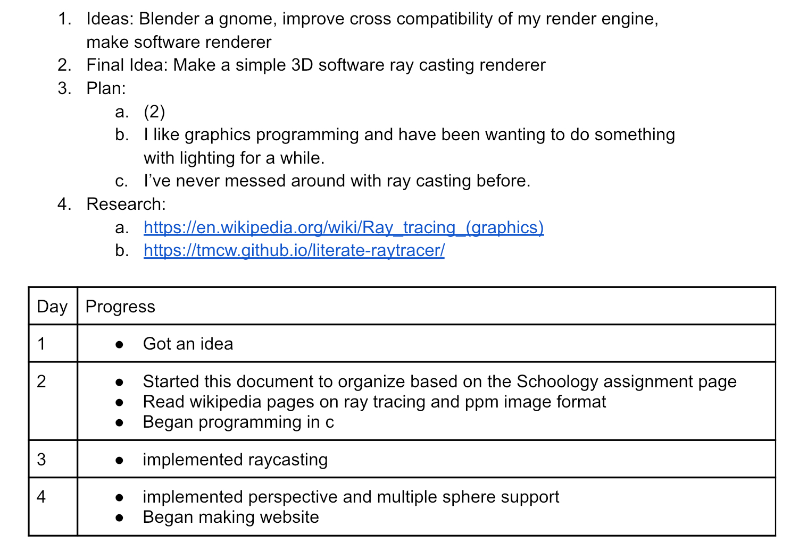
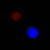

Goal
Make a 3D software ray casting renderer.
Why
I’ve been doing a lot of graphics programming recently and wanted to do something with lighting.
How
Theory:
Ray casting is when you shoot a ray, and check if it intersects something. To render things using this technique, you can shoot rays for every pixel, and check if it intersects an object. Depending on the color (and other properties) of what it hit you change the corresponding pixel's color. Ray tracing is this concept but extended, where you also trace things like reflection and refraction to produce more photo-realistic renders.
Project Planning, Research, and Log:
Research Links:
Results
So far the code is only a simple ray caster for colored spheres due to project time limit. GitHub Page
Reflection:
I enjoyed this project as it's similar to what I do when program at home. The less structured approach allowed me to learn the information I needed fast and move one.